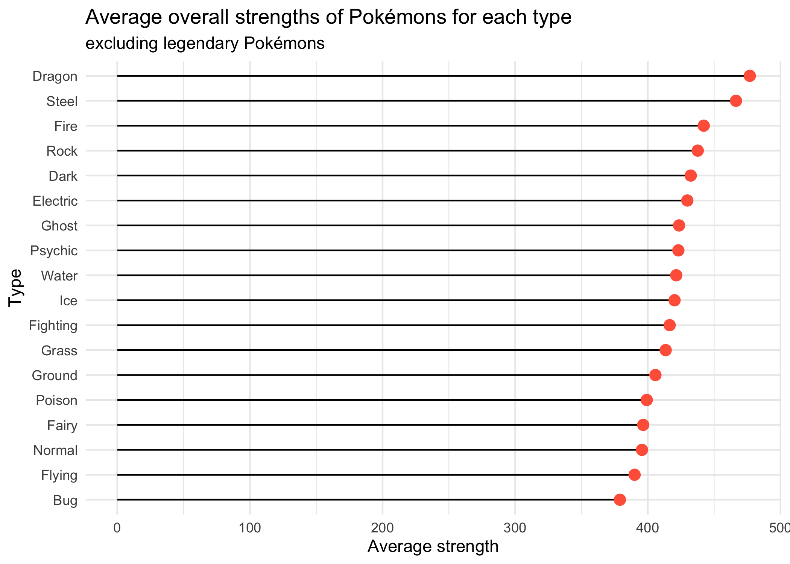
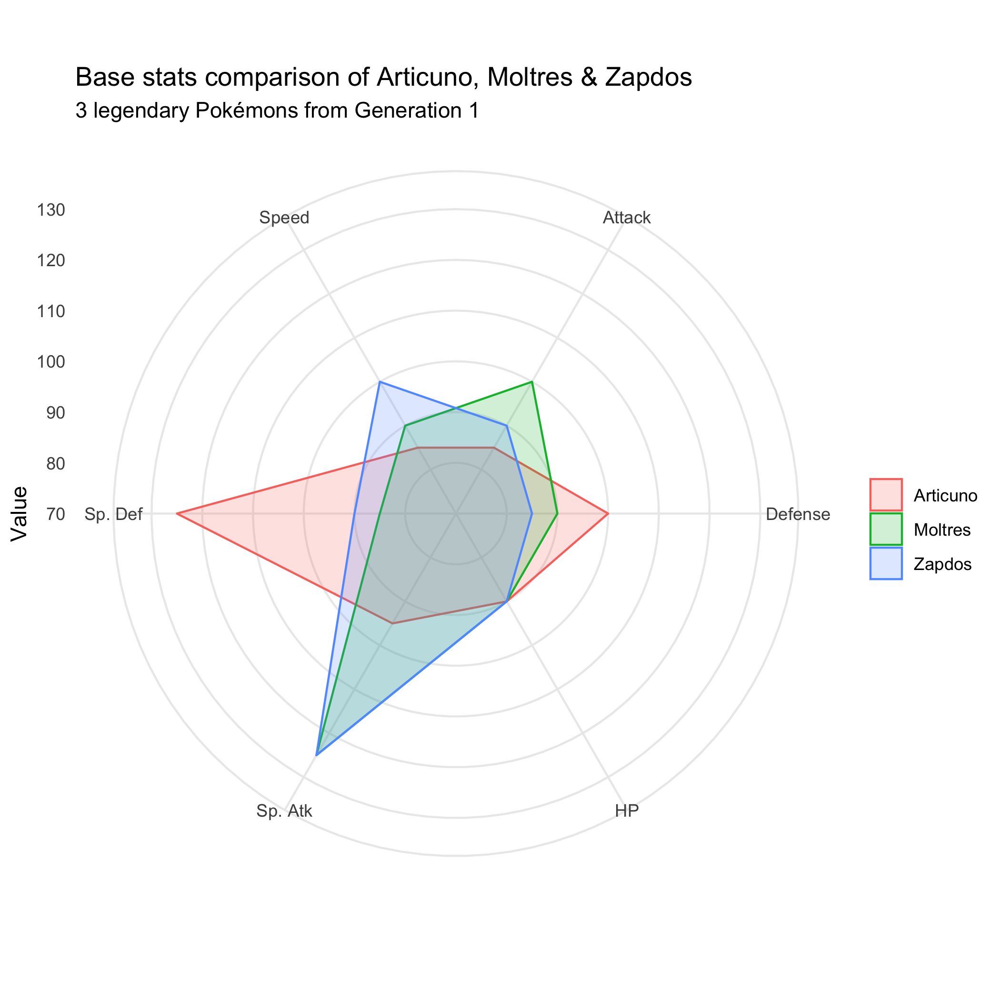

Introducing the data
In this excercise, data from kaggle are used. The data show the base statistics of 721 pokémons from generations one to six. I am analyzing the data because I am a pokémon fan and thought they would be perfect for this exercise.
Each row corresponds to a single pokémon. For each pokémon, it has the following variables:
- #: ID number of the pokémon
- Name: Name of the pokémon
- Type 1: The type of the pokémon, which determines resistance/weakness to attacks
- Type 2: The second type held by some of the pokémon
- Total: The sum of all base statistics of the pokémon
- HP: Hit Points, how much damage the pokémon can receive before fainting
- Attack: The base modifier for physical attacks
- Defense: The base damage resistance against physical attacks
- SP Atk: Special Attack, the base modifier for special attacks
- SP Def: Special Defence, the base damage resistance against special attacks
- Speed: The base modifier for the pokémon's speed which determines the order of pokémon that can act in battles
- Generation: The generation where the pokémon is grouped in
- Legendary: Shows "TRUE" or "FALSE" according to whether the pokémon is grouped as legendary or not
When I played the pokémon game, I often encountered the situation where I needed to choose which pokémon to catch or carry with me. For example, for the 1st generation, the player needs to choose between Bulbasaur ("Grass" type), Charmander ("Fire" type), and Squirtle ("Water" type) as their first pokémon. Each pokémon has at least one type, and pokémon's type is one of the important factors to determine their strengths because some types of attacks are extremely effective to other types of pokémons.
Therefore, I'll analyze the pokémons' strengths for each type and determine which type of pokémons are stronger overall.
Additionally, in every generation of the game, you'll eventually get a chance to catch a legendary pokémon, extremely rare and strong pokémon. However, you usually need to choose only one pokémon to catch and give up on the other ones. So I'll analyze the data to compare the base statistics of particular legendary pokémons in order to make a better decision when it comes to choose between them.
With this in mind, I'm going to answer the following questions:
- What types of pokémons are stronger overall?
- What are the differences in base statistics of particular legendary pokémons?
To answer these questions, I'm going to analyze the data with R and create the visualizations that show the following:
Load the CSV file
First, I'm going to load the CSV file from my computer.
pokemon <- read_csv("data/Pokemon.csv")
View(pokemon)
head(pokemon)
Average overall strength of pokémons for each type
In the dataset, the column "Total" shows "a general guide to how strong a pokemon is", according to a data description written by the creater of the data Myles O'Neill.
Now, I'm going to create a lollipop chart that shows average overall strength for each type of pokémons. I'll exclude the legendary pokémons because they can be considered as outliers.
Here, firstly I exclude the legendary pokémons and calculate the average numbers of the "Total" values for each 1st type of Pokémons. (Some pokémons don't have 2nd types, so I just focused on the 1st types.)
Then I reorder the values of the average strength.
Mapping the data into visualization, I layer the lines using "geom_segment" and the points using "geom_point". Here, I used the R Graph Gallery as a reference.
pokemon %>% filter(Legendary == "FALSE") %>% group_by(`Type 1`) %>% summarize(avg.strength = mean(Total, na.rm = TRUE)) %>% arrange(avg.strength) %>% mutate(`Type 1` = factor(`Type 1`, levels = `Type 1`)) %>% ggplot(aes(x = `Type 1`, y = avg.strength)) + geom_segment(aes(xend = `Type 1`, yend = 0)) + geom_point(size = 3, color = "tomato") + coord_flip() + labs(title = "Average overall strengths for each type", subtitle = "excluding legendary Pokémons", x = "Type", y = "Average strength") + theme_minimal()
The visualization shows that the "Dragon" type is the strongest and the "Bug" type is the weakest overall. It also shows the order of the strengths of each pokémon's type. For example, it shows that "Fire" type pokémons are stronger than "Water" ones, and "Water" ones are stronger than "Grass" ones on average.
Base stats comparison of particular legendary pokémons
Next, to answer the second question, I'm going to create a rader chart to compare the attributes of some legendary pokémons. Each generation has a different set of legendary pokémons, and you only need to choose between pokémons in the same generations. In order to make a better decision on which legendary pokémon to catch, you only need to compare the base statistics between a certain set of legendary pokémons.
With this in mind, I'll focus on the first generation's legendary pokémons Articuno, Moltres, and Zapdos.
To do this, I'm going to filter rows about those pokémons and obtain a tidy dataset with their names and attributes. In mapping the data into visualization, I used the R Graph Gallery as a reference.
# filter data about Articuno, Moltres, and Zapdos legendary <- pokemon %>% filter(Name %in% c("Articuno", "Zapdos", "Moltres")) %>% select(Name, HP, Attack, Defense, `Sp. Atk`, `Sp. Def`, Speed) # obtain a tidy data legendary <- gather(legendary, "attribute", "value", 2:7) %>% arrange(attribute) # map into the visualization ggplot(legendary, mapping = aes(x = attribute, y = value, group = Name)) + geom_polygon(aes(color = Name, fill = Name), alpha = 0.2) + coord_polar() + ylim(70, 130) + labs(title = "Base stats comparison of Articuno, Moltres & Zapdos", subtitle = "3 legendary Pokémons from Generation 1", x = "", y = "Value", color = "", fill = "") + theme_minimal()
The visualization shows that Articuno, Moltres, and Zapdos all have the same amount of HP. Articuno is stornger in defence while Moltres is stronger in attack. Zapdos is the fastest and stronger in Special Attack but has less resistance against both physical and special attacks.